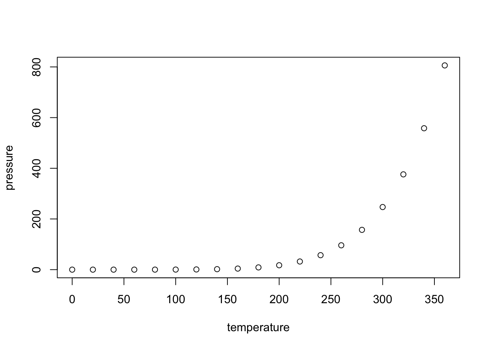

test
Ben Best
March 11, 2016
Learning Objectives
- To be able to subset vectors, factors, matrices, lists, and data frames
- To be able to extract individual and multiple elements:
- by index,
- by name,
- using comparison operations
- To be able to skip and remove elements from various data structures.
Learning Objectives
- To be able to subset vectors, factors, matrices, lists, and data frames
- To be able to extract individual and multiple elements:
- by index,
- by name,
- using comparison operations
- To be able to skip and remove elements from various data structures.
R Markdown
This is an R Markdown document. Markdown is a simple formatting syntax for authoring HTML, PDF, and MS Word documents. For more details on using R Markdown see http://rmarkdown.rstudio.com.
When you click the Knit button a document will be generated that includes both content as well as the output of any embedded R code chunks within the document. You can embed an R code chunk like this:
summary(cars)## speed dist
## Min. : 4.0 Min. : 2.00
## 1st Qu.:12.0 1st Qu.: 26.00
## Median :15.0 Median : 36.00
## Mean :15.4 Mean : 42.98
## 3rd Qu.:19.0 3rd Qu.: 56.00
## Max. :25.0 Max. :120.00Including Plots
You can also embed plots, for example:

Note that the echo = FALSE parameter was added to the code chunk to prevent printing of the R code that generated the plot.